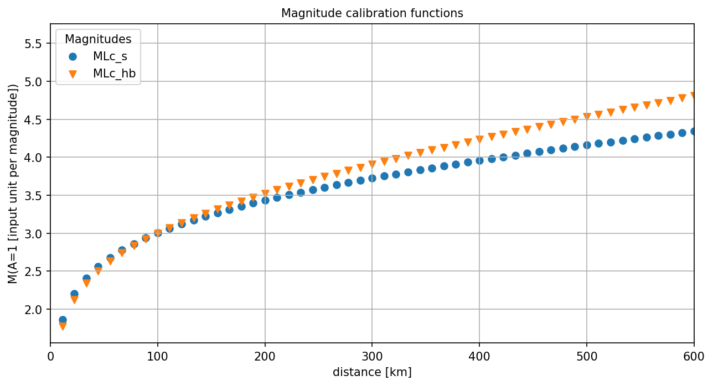

MLc¶
Custom magnitude for local events measured on horizontal components
Description¶
MLc is a custom magnitude for local events based on ML but with greater flexibility. The original implementation is based on specifications by the Hessian Agency for Nature Conservation, Environment and Geology, Hessian Earthquake Service. More options have been added allowing the magnitude to be configured with great flexibility in order to account for many different conditions. The general procedures for measuring amplitudes and computing magnitudes are outlined in the “Concepts” section on magnitudes.
The MLc magnitude is very similar to the original ML, except that
Amplitude pre-filtering is applied by default.
Wood-Anderson simulation is optionally applied and can be deactivated.
Measured amplitudes can be scaled accounting for expected units.
Measured amplitudes are combined by taking the maximum instead of the average.
A parametric magnitude calibration function applies but a correction in the form log10(A0) can be configured for converting measured amplitudes to station magnitudes.
Hypocentral instead of epicentral distance is considered by default.
Amplitudes¶
Some general conditions apply for measuring amplitudes:
Name amplitude type: MLc.
Expected unit of gain-corrected input data: m/s. Activate response correction in global bindings in case data are provided in acceleration.
Components used for amplitude measurements: both horizontal components separately.
The parameters for measuring MLc amplitudes can be adjusted by global binding parameters where you need to create an amplitude-type profile giving it the name of MLc (replace $name by MLc, for aliases read the section Amplitudes and Magnitudes):
Topic |
Parameter |
Default |
Comment |
|---|---|---|---|
MLc-specific parameters |
|||
|
true |
When WA simulation is inactive, measured amplitudes take the units of the gain of the stream on which they were measured. |
|
Amplitude scaling |
|
1 |
Apply for scaling measured amplitudes to units required by the magnitude |
Amplitude combination |
|
max |
Method for combining amplitudes measured on both horizontal components |
general parameters |
|||
|
Applied before WA instrument simulation |
||
|
2080, 0.8, 0.7 |
Defaults: see IASPEI recommendation. |
|
Minimum distance |
0 |
||
Maximum distance |
8 |
Cannot be extended beyond default |
|
Minimum source depth |
0 |
Can be negative |
|
Maximum source depth |
80 |
Can be extended beyond default |
|
Noise window begin |
-30 |
(+++) |
|
Noise window end |
-5 |
(+++) |
|
Signal window begin |
-5 |
(+++) |
|
Signal window end |
150 (+) or distance/3+30 (++) |
(+) When measured by scautopick, (++) When measured by scamp or scolv (+++) |
|
Minimum SNR |
0 |
Compares the |
|
maximum amplitudes measured within the signal and noise windows. |
|||
Period range |
-1, Do not set! |
Period is not measured. Configuration with values > 0 will prevent any MLc amplitude from being measured. |
|
Amplitude saturation |
false |
Apply for avoiding measurements on clipped data |
|
Response correction |
false |
Activate for input units other than nm/s and set |
(+++) All values defining the time windows for measuring noise and signal are relative to P arrival time, read Time grammar.
The default values are valid for SW-Germany (Stange [72]).
The Wood-Anderson simulation will convert input velocity data to ground
displacement in mm. The input data may be of a different unit after applying
amplitudes.$name.preFilter, e.g. when integration is applied, and /
or when Wood-Anderson simulation is disabled. Configure
amplitudes.$name.amplitudeScale for converting the unit of the
processed data to the unit expected by the
station magnitude calibration for the measured
amplitude.
Note
For comparing MLc amplitudes with ML amplitudes set the global bindings parameters
amplitudes.MLc.preFilter = ""
amplitudes.MLc.combiner = average
Station magnitudes¶
Station magnitudes are computed from measured amplitudes by applying a configurable calibration function when the origin is within depths and distance constraints. The parameters are configurable in global bindings or by global module parameters when applying regionalization.
Station corrections are configurable by a magnitude-type profile named MLc in
global bindings with magnitudes.$name.offset or the equivalent in
global module configuration as module.trunk.NET.STA.magnitudes.MLc.offset.
The latter is not supported by scconfig but it reduces the amount of
required bindings.
The calibration function is considered in one of the forms
Parametric when
magnitudes.MLc.calibrationType= “parametric”:where
A: displacement amplitude measured in unit of mm or as per configuration
c1 - c8: general calibration parameters
c0: station-specific correction
r: Hypocentral (default) or epicentral distance as configured by
magnitudes.MLc.distModeh: (source depth -
magnitudes.MLc.parametric.H) when source depth >magnitudes.MLc.parametric.Hbut 0 otherwise.
The default values are valid for SW-Germany (Stange [72]). c6, H have been added for supporting dependency on depth Rhoades et al. [66]) and c7, c8 for observations at short distances (Luckett et al. [62]).
log10(A0)-based non-parametric when
magnitudes.MLc.calibrationType= “A0”:where
: distance-dependent correction value. Read MLv for the details.
Note
MLc magnitude calibration function can be regionalized by adjusting global module configuration parameters in MLc region profiles of
magnitudes.$name.region.*and in a MLc magnitude-type profile e.g., inglobal.cfg.
The parameters for computing MLc magnitudes from amplitudes can be adjusted by global binding parameters or regionalization where you need to create a magnitude-type profile giving it the name of MLc (replace $name by MLc, for aliases read the section Amplitudes and Magnitudes):
Topic |
Parameter |
Default |
Comment |
|---|---|---|---|
MLc-specific parameters |
|||
Distance type |
|
hypocentral |
epicentral |
or hyocentral can be selected Magnitude calibration type |
|||
|
parametric |
parametric and A0 (non-parametric) are available |
|
parametric calibration |
Parameters are used for |
||
|
0.0 |
||
|
0.69 |
||
|
0.00095 |
||
|
1.11 |
||
|
0.0 |
||
|
1.0 |
||
|
0.0 |
see Rhoades et al. [66] |
|
|
40.0 |
see Rhoades et al. [66] |
|
|
0.0 |
see Luckett et al. [62] |
|
|
0.0 |
see Luckett et al. [62] |
|
non-parametric calibration |
Parameters are used for |
||
|
0:-1.3,60:-2.8,100:-3.0,400:-4.5,1000:-5.85 |
from ML magnitude |
|
general parameters |
|||
Minimum distance |
-1 |
||
Maximum distance |
8 |
Measurements beyond 8 deg are strictly ignored |
|
Minimum source depth |
-10 |
||
Maximum source depth |
80 |
Can be extended beyond default |
|
Period range |
Do not set at all! |
Configuration with any value will prevent any MLc magnitude from being computed if the amplitude contains no period value. |
|
Amplitude type |
MLc |
Configurable by amplitude and magnitude alias |
|
Amplitude unit |
mm |
other units can be assumed by amplitude scaling with |
|
Linear magnitude correction |
1.0 |
Configure station corrections more conveniently in global module configuration as |
|
Constant magnitude correction |
0.0 |
Configure station corrections more conveniently in global module configuration as |
Network magnitude¶
The network magnitude is computed from station magnitudes automatically by
scmag or interactively by scolv.
Originally the median was computed from all station MLc to form the
network magnitude MLc. Here, the trimmed mean is applied. Outliers
beyond the outer 12.5% percentiles are removed before forming the mean. The
method can be adjusted in scmag by magnitudes.average.
Moment magnitude¶
MLc can be scaled to a moment magnitude, Mw(MLc), by a magnitude-type profile in global module configuration. Read the Tutorial on moment magnitudes for the details.
Aliases¶
Amplitude and magnitude aliases can be created by magnitudes.aliases
and amplitudes.aliases, respectively, in global module configuration
in order to derive other magnitude types from
original amplitudes and magnitudes. The actual amplitude and magnitude
parameters of the aliases will be configured in global bindings or by
magnitude-type profiles in global module configuration. Read the
Tutorial on magnitude aliases for the
details.
Regionalization¶
Regionalization may be achieved by a magnitude-type profile in global module configuration. Read the Tutorial on regionalization for the details.
Examples¶
The flexibility of the amplitude and magnitude processing allows for MLc to be applied in various use cases. Examples are given below.
Default: Pre-filtered and gain-corrected amplitudes, Wood-Anderson corrected and measured in mm for Southwestern Germany, Stange [72]:
Wood-Anderson-corrected displacement amplitudes measured in mm for Southern California, Hutton and Boore [54]:
Pre-filtered velocity amplitudes in units of mym/s (requiring to set
amplitudes.MLc.amplitudeScale), no Wood-Anderson correction, for West Bohemia, e.g. Hiemer and Roessler [53]:

MLc magnitudes for measured amplitude of 1 mm with default magnitude calibration (MLc_s, Stange [72]) and calibration values for Southern California (MLc_hb, Hutton and Boore [54]).¶
Setup¶
Set the configuration and calibration parameters in the global bindings similar to ML. Instead of configuring lots of global bindings profiles or station bindings one line per parameter can be added to the global module configuration (
global.cfg) which takes the formmodule.trunk.NET.STA.amplitudes.MLc.preFilter = value module.trunk.NET.STA.magnitudes.MLc.parametric.c0 = value
Add MLc to the list of default amplitudes and magnitudes if MLc is to be computed by automatic modules, e.g. of scamp, scmag.
Configure scmag (
magnitudes.averageinscmag.cfg) for choosing the method to form the network magnitude from station magnitudes, e.g.magnitudes.average = MLc:median
Add MLc to the list of magnitudes preferred by scevent (
eventAssociation.magTypesinscevent.cfg) in order to let MLc become the preferred magnitude.Set defaults/visibility of MLc in GUI modules, e.g. scolv or scesv.